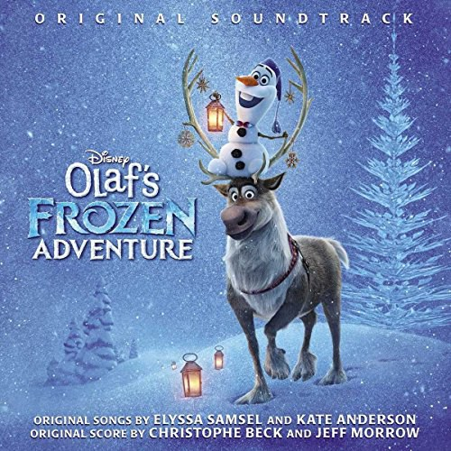

2017年12月
23 条
其中 6 条带正文
图 1 张
广播发布后不可编辑，所以每条都是那一刻的原话。
2017-12-30 21:12:02
收藏游戏到豆列  胡闹厨房 Overcooked!
胡闹厨房 Overcooked!
先买了，但愿下次打折前可以有这辈子第一个女盆友 _(:з」∠)_ Purchased: Dec 30, 2017 @ 11:36pm Overcooked - ¥ 17 Overcooked - The Lost Morsel - ¥ 6 Subtotal ¥ 78 Di…
2017-12-30 21:11:19
等有女盆友了一起玩
2017-12-29 05:31:03
想玩 神舞幻想
古剑家发行商出的，质量观望
2017-12-27 14:20:53
2017-12-27 11:52:24
2017-12-27 09:46:04
在读  囚徒健身
囚徒健身
2017-12-26 17:36:57
看过  羞羞的铁拳
羞羞的铁拳
2017-12-25 20:23:16
看过  绣春刀
绣春刀
2017-12-18 10:57:34
2017-12-18 10:57:25
收藏游戏到豆列 寻找天堂 Finding Paradise
算是给to the moon补票吧 Transaction ID: 2496548587319720974 Payment Method: Steam Wallet Purchased: Dec 18, 2017 @ 1:26pm Finding Paradise - ¥ …
2017-12-17 21:43:28
听过 
2017-12-17 21:42:40
听过 Coco (Original Motion Picture Soundtrack)
2017-12-16 22:41:10
2017-12-13 19:23:02
 万能钥匙 / The Skeleton Key
万能钥匙 / The Skeleton Key2017-12-13 19:01:01
 未来的未来 / 未来のミライ
未来的未来 / 未来のミライ2017-12-10 18:21:48
读过 浅薄
2017-12-10 11:11:12
 丹特的午餐 / Dante’s Lunch
丹特的午餐 / Dante’s Lunch2017-12-08 16:40:17
看过  寻梦环游记 / Coco
寻梦环游记 / Coco
2017-12-08 16:26:08
看过  雪宝的冰雪大冒险 / Olaf’s Frozen Adventure
雪宝的冰雪大冒险 / Olaf’s Frozen Adventure
2017-12-07 18:28:43
想读
2017-12-05 11:42:10
说：
豆瓣真不是省油灯，API疯狂限次；直接抓网页先封我的User-Agent，再封我的IP，于是随机了Agent之后又要上tor了，速度跟不上，得多tor一起用。。。感觉写爬虫的耐心上了一个档次
{kind=link}
2017-12-03 22:21:59
想看 雪宝的冰雪大冒险 / Olaf’s Frozen Adventure
下周一去看～ 土澳8号才上映真是
2017-12-03 18:27:50
想看 寻梦环游记 / Coco